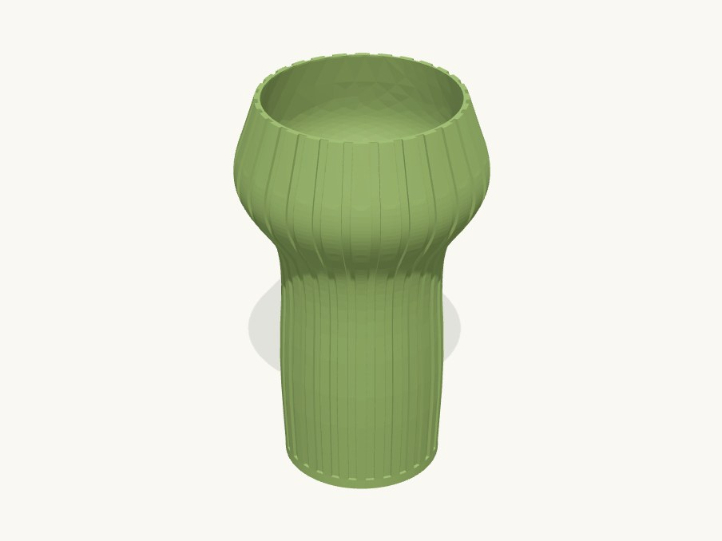

Work / Desk & decor

Technical details
Borrowed from the reference photo brief (ideas/ribbed_desk_vase/inspiration): tall ~2:1 cylinder, pronounced bulging shoulder, wide mouth, evenly spaced sharp-edged vertical flutes running from just above the base through the shoulder to the rim, no fillets on the ribs.
Print: spiral / vase mode (Snapmaker Orca "Spiral vase"), 2-3 bottom layers, 0.4 nozzle, any rigid filament; the slicer follows the fluted outer contour with a single perimeter. Printed as a normal shell instead, the wall is 2.0 mm between flutes and 0.8 mm under them. The shoulder leans out 28 deg and the mouth leans in 14 deg from vertical: both self-supporting. Not watertight for water without a sealant (single wall); fine for dried stems or a glass insert.
Assumptions (user unavailable): sizes from the brief's proportions, 150 mm tall; 28 flutes so the ribs and grooves are about equal width at the body; flutes straight (FLUTE_TWIST = 0).
Parts
| Part | Size (mm) | Volume | Thinnest wall | Printability |
|---|---|---|---|---|
| vase · spiral vase | 92.468 × 92.468 × 150 | 55.9 cm³ | 0.67 mm | passes |
Engineering views
Downloads
- ribbed_vase.3mfwhole plate · 285 KB
- vase.stepSTEP · 9.5 MB
- vase.stlSTL · 974 KB
Library parts used
Parametric components shared with the other designs; see the parts library.
| Component | What it does | Printed in |
|---|---|---|
Flutesform.flutes | Cut vertical flutes into (or raise ribs on) the outer surface of any body, following its profile; polar array about Z. | PLA |
Revolved bodyform.revolved_body | Solid of revolution about Z from an (r, z) profile, spline-smoothed by default, base on z=0 (vases, planters, lamps, knobs). | PLA |
Shell open topform.shell_open_top | Hollow a solid into an open-top shell of uniform wall (floor included); default hollows the default revolved_body. | not yet |
Source: models/ribbed_vase · built 2026-09-09 13:43
Fluted desk vase
A tall fluted vase with a bulging shoulder, drawn from a reference photo and printed as one continuous wall.
Printed in spiral mode, so the nozzle never stops: a single perimeter climbs from base to rim and the flutes come out crisp. Fast to print and light on filament.
- Size
- 92 × 92 × 150 mm
- Print plate
- 92 × 92 × 150 mm
- Parts
- 1
- Filament (PLA)
- about 51 g
- Print time
- about 3.5 h
- Status
- Ready to print
Want it in another size, colour or material? Say so in the request: fitting it to your object is a $5 adjustment, and you see the revised design before it's printed.
Measure it, describe it, and we'll draw it.
Requests take a few minutes. You'll get the design and a price back before anything is printed.